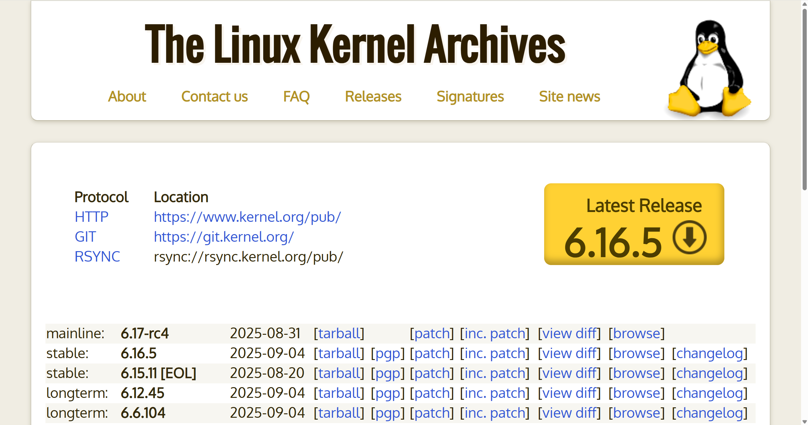
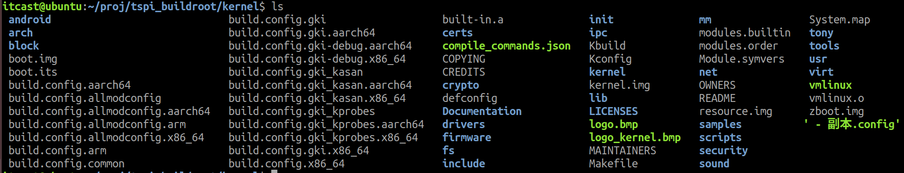

<!DOCTYPE lake>
<h1 data-lake-id="VKYJs" id="VKYJs"><span data-lake-id="u0d85ceab" id="u0d85ceab">Linux内核源码</span></h1><p data-lake-id="ud8a19d6b" id="ud8a19d6b"><span data-lake-id="ufac54709" id="ufac54709">Linux内核官网: </span><a data-lake-id="uc80e2f40" href="https://www.kernel.org/" id="uc80e2f40" rel="noopener noreferrer" target="_blank"><span data-lake-id="u29120d6a" id="u29120d6a">https://www.kernel.org/</span></a></p><p data-lake-id="u2e0f307d" id="u2e0f307d"></p><blockquote data-lake-id="u20ac9071" id="u20ac9071"><p data-lake-id="uf027e7ac" id="uf027e7ac"><span data-lake-id="u5609a20f" id="u5609a20f">嵌入式的linux内核源码需要从单片机厂商获取</span></p></blockquote><h1 data-lake-id="wfj0N" id="wfj0N"><span data-lake-id="ua07933e2" id="ua07933e2">Linux内核源码结构</span></h1><p data-lake-id="ub706e5aa" id="ub706e5aa"></p><table class="lake-table" data-lake-id="ESixD" id="ESixD" margin="true" style="width: 735px"><colgroup><col width="217"/><col width="518"/></colgroup><tbody><tr data-lake-id="u5a1c82a6" id="u5a1c82a6"><td data-lake-id="u6d54f98f" id="u6d54f98f"><p data-lake-id="u49508efd" id="u49508efd"><span data-lake-id="ua411943c" id="ua411943c">目录</span></p></td><td data-lake-id="u043b0d8c" id="u043b0d8c"><p data-lake-id="u2153ee75" id="u2153ee75"><span data-lake-id="u203c61d8" id="u203c61d8">内容</span></p></td></tr><tr data-lake-id="u0d425c57" id="u0d425c57"><td data-lake-id="u635a1cb5" id="u635a1cb5"><p data-lake-id="ubc4f7854" id="ubc4f7854"><span data-lake-id="u375fd81f" id="u375fd81f">arch</span></p></td><td data-lake-id="u4cd02f4c" id="u4cd02f4c"><p data-lake-id="u5906de16" id="u5906de16"><span data-lake-id="u2df9ed49" id="u2df9ed49">存放不同平台体系相关代码</span></p></td></tr><tr data-lake-id="uf34b34f8" id="uf34b34f8"><td data-lake-id="uc23513a3" id="uc23513a3"><p data-lake-id="ubc19fea6" id="ubc19fea6"><span data-lake-id="u0afa8d2a" id="u0afa8d2a">block</span></p></td><td data-lake-id="u506bde6a" id="u506bde6a"><p data-lake-id="u04a48132" id="u04a48132"><span data-lake-id="u908eb0e1" id="u908eb0e1">存放块设备相关代码</span></p></td></tr><tr data-lake-id="u2ba38760" id="u2ba38760"><td data-lake-id="u5f6132f0" id="u5f6132f0"><p data-lake-id="u61abc2ef" id="u61abc2ef"><span data-lake-id="u5eb27d23" id="u5eb27d23">crypto</span></p></td><td data-lake-id="ua98b2903" id="ua98b2903"><p data-lake-id="u997a8b57" id="u997a8b57"><span data-lake-id="u7159bd49" id="u7159bd49">存放加密、压缩、CRC校验等算法相关代码</span></p></td></tr><tr data-lake-id="ub2305284" id="ub2305284"><td data-lake-id="u3bddff68" id="u3bddff68"><p data-lake-id="ue285589e" id="ue285589e"><span data-lake-id="ub48ad366" id="ub48ad366">Documentation</span></p></td><td data-lake-id="u61dfcddc" id="u61dfcddc"><p data-lake-id="u87c2c4ae" id="u87c2c4ae"><span data-lake-id="u24e15ae0" id="u24e15ae0">存放相关说明文档，很多实用文档，包括驱动编写等</span></p></td></tr><tr data-lake-id="uc7a5b818" id="uc7a5b818"><td data-lake-id="u640eaf39" id="u640eaf39"><p data-lake-id="ua4378a88" id="ua4378a88"><span data-lake-id="u7c836213" id="u7c836213">drivers</span></p></td><td data-lake-id="u83c58b53" id="u83c58b53"><p data-lake-id="u2309c7a0" id="u2309c7a0"><span data-lake-id="u4cc307c9" id="u4cc307c9">存放Linux内核设备驱动程序源码。该目录包含众多驱动，目录按照设备类别进行分类，如char、block、input、i2c、spi、pci、usb等。</span></p></td></tr><tr data-lake-id="u8beb1a45" id="u8beb1a45"><td data-lake-id="ueb6266f7" id="ueb6266f7"><p data-lake-id="u1e89eed9" id="u1e89eed9"><span data-lake-id="ud3bfd4fe" id="ud3bfd4fe">fs</span></p></td><td data-lake-id="u2f76269c" id="u2f76269c"><p data-lake-id="u17e375f5" id="u17e375f5"><span data-lake-id="u5c426f8a" id="u5c426f8a">存放虚拟文件系统代码</span></p></td></tr><tr data-lake-id="ua4b0fe3c" id="ua4b0fe3c"><td data-lake-id="u5a2cb41c" id="u5a2cb41c"><p data-lake-id="u9d298273" id="u9d298273"><span data-lake-id="u4c6eef78" id="u4c6eef78">include</span></p></td><td data-lake-id="u1c9bf908" id="u1c9bf908"><p data-lake-id="u9795f8d3" id="u9795f8d3"><span data-lake-id="u57e5fd7d" id="u57e5fd7d">存放内核所需、与平台无关的头文件</span></p></td></tr><tr data-lake-id="u2883baa0" id="u2883baa0"><td data-lake-id="u7b4caa74" id="u7b4caa74"><p data-lake-id="u915cc8b2" id="u915cc8b2"><span data-lake-id="ueacb1f52" id="ueacb1f52">init</span></p></td><td data-lake-id="u541ba621" id="u541ba621"><p data-lake-id="ucd9faf1a" id="ucd9faf1a"><span data-lake-id="u8ea211c7" id="u8ea211c7">Linux 系统启动初始化相关的代码</span></p></td></tr><tr data-lake-id="uc6edf0ef" id="uc6edf0ef"><td data-lake-id="u5f8cbffe" id="u5f8cbffe"><p data-lake-id="u2f1e3a16" id="u2f1e3a16"><span data-lake-id="u2da407cc" id="u2da407cc">ipc</span></p></td><td data-lake-id="ue356cdaa" id="ue356cdaa"><p data-lake-id="u030e3e0b" id="u030e3e0b"><span data-lake-id="u7a7fb66f" id="u7a7fb66f">存放进程间通信代码</span></p></td></tr><tr data-lake-id="u09068c14" id="u09068c14"><td data-lake-id="u73a2f334" id="u73a2f334"><p data-lake-id="u95f9da86" id="u95f9da86"><span data-lake-id="u0d10c661" id="u0d10c661">kernel</span></p></td><td data-lake-id="ud1ea41be" id="ud1ea41be"><p data-lake-id="u61a7b639" id="u61a7b639"><span data-lake-id="u0c091336" id="u0c091336">Linux 内核的核心代码，包含了进程调度子系统，以及和进程调度相关的模块。</span></p></td></tr><tr data-lake-id="u80aefe2a" id="u80aefe2a"><td data-lake-id="u9cc6c8a2" id="u9cc6c8a2"><p data-lake-id="ua385bcf2" id="ua385bcf2"><span data-lake-id="u8452c6e7" id="u8452c6e7">lib</span></p></td><td data-lake-id="u1aeb21d0" id="u1aeb21d0"><p data-lake-id="u9e2f699b" id="u9e2f699b"><span data-lake-id="ufd19f4ee" id="ufd19f4ee">库文件代码，实现需要在内核中使用的库函数，例如CRC、FIFO、list、MD5等。</span></p></td></tr><tr data-lake-id="ucfb6daab" id="ucfb6daab"><td data-lake-id="u2830e68c" id="u2830e68c"><p data-lake-id="u0e1f4cd2" id="u0e1f4cd2"><span data-lake-id="ub4699411" id="ub4699411">mm</span></p></td><td data-lake-id="u2bd4a9db" id="u2bd4a9db"><p data-lake-id="uc7eb0b67" id="uc7eb0b67"><span data-lake-id="ub704d5c3" id="ub704d5c3">实现存放内存管理代码</span></p></td></tr><tr data-lake-id="uc2bbf35a" id="uc2bbf35a"><td data-lake-id="u6e5f08f1" id="u6e5f08f1"><p data-lake-id="ufad4c5d7" id="ufad4c5d7"><span data-lake-id="u13573272" id="u13573272">net</span></p></td><td data-lake-id="ua655103a" id="ua655103a"><p data-lake-id="u98e2e3ec" id="u98e2e3ec"><span data-lake-id="uca9f2570" id="uca9f2570">存放网络相关代码</span></p></td></tr><tr data-lake-id="uf321ad8e" id="uf321ad8e"><td data-lake-id="ub5dd88e6" id="ub5dd88e6"><p data-lake-id="uec002142" id="uec002142"><span data-lake-id="u06ee7213" id="u06ee7213">samples</span></p></td><td data-lake-id="u6fedda7e" id="u6fedda7e"><p data-lake-id="ubf841c19" id="ubf841c19"><span data-lake-id="u0b94ebe3" id="u0b94ebe3">存放提供的一些内核编程范例</span></p></td></tr><tr data-lake-id="u077742cf" id="u077742cf"><td data-lake-id="u5f883ea3" id="u5f883ea3"><p data-lake-id="u052cb3e1" id="u052cb3e1"><span data-lake-id="u6b780176" id="u6b780176">scripts</span></p></td><td data-lake-id="u6e72daaf" id="u6e72daaf"><p data-lake-id="ua7cc9d27" id="ua7cc9d27"><span data-lake-id="u13d82a3b" id="u13d82a3b">存放一些脚本文件</span></p></td></tr><tr data-lake-id="u35423b05" id="u35423b05"><td data-lake-id="udaaf3264" id="udaaf3264"><p data-lake-id="uee3952d0" id="uee3952d0"><span data-lake-id="u23d32255" id="u23d32255">security</span></p></td><td data-lake-id="u269323e1" id="u269323e1"><p data-lake-id="u452492dd" id="u452492dd"><span data-lake-id="u04ea453d" id="u04ea453d">存放系统安全性相关代码</span></p></td></tr><tr data-lake-id="u390588e1" id="u390588e1"><td data-lake-id="ube065938" id="ube065938"><p data-lake-id="u0b738166" id="u0b738166"><span data-lake-id="ud06045a0" id="ud06045a0">sound</span></p></td><td data-lake-id="u62554ff5" id="u62554ff5"><p data-lake-id="u9d7db4b9" id="u9d7db4b9"><span data-lake-id="ud7a4a8c6" id="ud7a4a8c6">存放声音、声卡相关驱动</span></p></td></tr><tr data-lake-id="ucf2cb725" id="ucf2cb725" style="height: 36px"><td data-lake-id="u906d0ad1" id="u906d0ad1"><p data-lake-id="u50783eae" id="u50783eae"><span data-lake-id="ud9ee82fd" id="ud9ee82fd">tools</span></p></td><td data-lake-id="u6958df1e" id="u6958df1e"><p data-lake-id="ub45a1332" id="ub45a1332"><span data-lake-id="u2b02d52f" id="u2b02d52f">一些常用工具，如性能剖析、自测试等</span></p></td></tr><tr data-lake-id="u2411bb3a" id="u2411bb3a"><td data-lake-id="u9d9fa64e" id="u9d9fa64e"><p data-lake-id="uebc01b97" id="uebc01b97"><span data-lake-id="u71de46cf" id="u71de46cf">usr</span></p></td><td data-lake-id="udc37a96a" id="udc37a96a"><p data-lake-id="ua371ef36" id="ua371ef36"><span data-lake-id="u782bea75" id="u782bea75">用于生成 initramfs 的代码。</span></p></td></tr><tr data-lake-id="u3c2afe31" id="u3c2afe31"><td data-lake-id="u35225f98" id="u35225f98"><p data-lake-id="uea4c1a79" id="uea4c1a79"><span data-lake-id="uc91961cd" id="uc91961cd">virt</span></p></td><td data-lake-id="uc1c52fe2" id="uc1c52fe2"><p data-lake-id="u5870de5c" id="u5870de5c"><span data-lake-id="ub46043bd" id="ub46043bd">提供虚拟技术（KVM等）的支持</span></p></td></tr></tbody></table><p data-lake-id="u59674e7c" id="u59674e7c"><br/></p>